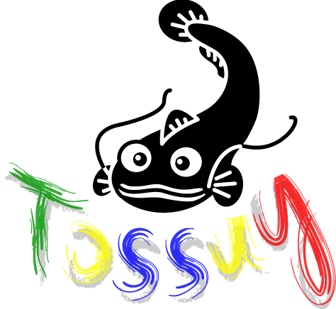

TOSSUG - http://www.tossug.org
Debian packaging &
Ubuntu PPA
Shih-Yuan Lee (FourDollars)
Dec. 27, 2011
Agenda
- Debian & Ubuntu
- Canonical & Launchpad
- Debian packages
- Advanced Package Tool
- Debian packaging
- pbuilder/cowbuilder
- pbuilder-dist
- Ubuntu PPA
- Daily Build
- Debian
- Debian是由GPL和其他自由軟體許可協議授權的自由軟體組成的作業系統，由Debian計畫（Debian Project）組織維護。Debian計畫是一個獨立的、分散的組織，由3000人志願者組成，接受世界多個非盈利組織的資金支援，Software in the Public Interest提供支援並持有商標作為保護機構。
- Ubuntu
- Ubuntu基於Debian發行版和GNOME桌面環境，與Debian的不同在於它每6個月會發佈一個新版本。
- Ubuntu的運作主要依賴Canonical有限公司的支援，同時亦有來自Linux社區的熱心人士提供協助。
- Canonical
- 英屬曼島商肯諾有限公司 (Canonical Ltd) 是一家私人公司，由南非的企業家馬克·沙特爾沃思建立，主要為了促進開源軟體項目。Canonical在曼島登記註冊，其僱員分布在世界各地，其主要辦事處在倫敦，在波士頓、聖保羅、蒙特婁、上海、台北和曼島也有分公司。
- Launchpad
- Launchpad是Canonical有限公司所架設的網站，是一個提供維護、支援或連絡Ubuntu開發者的平台。其中提供了線上翻譯軟體的功能，你可以自由的參與Ubuntu或相關自由軟體的開發或翻譯工作。而你也可以利用該網站的回報機制來回報相關軟體的Bug，或者進一步提供建議。
Debian packages
- Binary packages
- 用來安裝在 Debian 系統上的套件
- Source packages
- 用來製作 Binary packages 的原始碼套件
Binary packages 使用在不同的地方
- deb
- 用來安裝在一般的 Debian 系統上的套件
- udeb
- 用來安裝在 Debian Installer 系統上面的套件
Debian packages 在 CPU 架構上的差異
- any
- 在任何不同的 CPU 架構上面都可以運行
- 對針對不同的 CPU 架構各編譯一個專屬的套件
- all
- 在所有的 CPU 架構上面都可以運行
- 只需要在某個 CPU 架構上面編譯出一個套件即可
- i386, amd64, ...
- 只針對某些 CPU 架構提供支援
- 在這些 CPU 架構上面各編譯出相對的套件
Advanced Package Tool
/etc/apt/sources.list
/etc/apt/sources.list.d/*.list
$ man sources.list
deb http://ftp.tw.debian.org/debian/ squeeze main contrib non-free deb-src http://ftp.tw.debian.org/debian/ squeeze main contrib non-free
- package type
deb使用在 Binary packagesdeb-src使用在 Source packages- source URI
http, https, file, cdrom, ftp, ssh- distribution
- oldstable,
stable, testing, unstable, experimental - lenny,
squeeze, wheezy, sid - components
- main, contrib, non-free
Advanced Package Tool
/etc/apt/preferences
/etc/apt/preferences.d/*
$ man apt_preferences
Package: * Pin: release a=*-proposed Pin-Priority: 400 Package: * Pin: origin "ppa.launchpad.net" Pin-Priority: 450
$ apt-cache policy ibus-chewing
ibus-chewing:
已安裝：1.3.9.2-3ubuntu2sylee1
候選： 1.3.9.2-3ubuntu2sylee1
版本列表：
*** 1.3.9.2-3ubuntu2sylee1 0
450 http://ppa.launchpad.net/fourdollars/ibus/ubuntu/ oneiric/main i386 Packages
100 /var/lib/dpkg/status
1.3.9.2-3ubuntu1.1 0
500 http://archive.ubuntu.com/ubuntu/ oneiric-updates/main i386 Packages
1.3.9.2-3ubuntu1 0
500 http://archive.ubuntu.com/ubuntu/ oneiric/main i386 Packages
練習製作 Debian packages (一)
- 安裝製作 Debian packages 所需套件
- # apt-get install
dpkg-dev build-essential devscripts quilt ubuntu-dev-tools - 下載 Source packages
- $
apt-get source--download-only hello - $
dget -uhttp://ftp.tw.debian.org/debian/pool/main/h/hello/hello_2.7-2.dsc
- dpkg-dev 是處理 Source packages 的基本工具
- build-essential 是編譯 Binary packages 的基本套件集
- /usr/share/build-essential/essential-packages-list
- devscripts 提供的工具，如 dch, what-patch, debuild, ...
- ubuntu-dev-tools 提供的工具，如 pbuilder-dist, ...
練習製作 Debian packages (二)
- Source packages 的三個主要檔案
- hello_2.7-1
.debian.tar.gz-- debian/ 目錄 - hello_2.7-1
.dsc-- 描述檔 - hello_2.7
.orig.tar.gz-- 上游原始碼包 - 解開 Source packages 的指令
- $
dpkg-source -xhello_2.7-1.dsc - 變更版號資訊
- $
dch -iThis is a test. - 只編譯 Binary packages 的指令
- $
dpkg-buildpackage-us -uc -tc-b - 只編譯 Source packages 的指令
- $
dpkg-buildpackage-us -uc-S - 比較不同版本間的差異
- $
debdiffhello_2.7-1.dsc hello_2.7-2.dsc
dpkg 的操作
- 查詢 Debian packages 的資訊
- $
dpkg -Ihello_2.7-3_i386.deb - 查詢 Debian packages 的內容
- $
dpkg -chello_2.7-3_i386.deb - 安裝 Debian packages
- #
dpkg -ihello_2.7-3_i386.deb - 查詢系統中的 Debian packages 資訊
- $
dpkg -shello - 查詢系統中的 Debian packages 內容
- $
dpkg -Lhello - 移除系統中的 Debian packages
- #
dpkg -rhello - 移除系統中的 Debian packages (連同 /etc 底下的設定檔)
- #
dpkg -Phello
Native v.s. Non-Native
- Native
- 只提供給 Debian 系統使用的套件，如 debian-policy, debian-reference, debhelper, ...
- Non-Native
- 除了 Native 以外的所有套件
Debian version 版本號碼
[epoch:]upstream_version[-debian_revision]
版號沒有 [-debian_revision] 的套件都是 native 的套件
使用 quilt 修補 Debian packages
- 設定 ~/.quiltrc
- QUILT_PATCHES=debian/patches
- QUILT_DIFF_ARGS="--color=auto"
- 查詢目前套件的所有 patch 資訊
- $ quilt
series - 查詢目前在哪個 patch
- $ quilt
top - 增加新的 patch
- $ quilt
new02-fix-some-typo.patch - 加入要 patch 的檔案
- $ quilt
addsrc/hello.c - 更新 patch
- $ quilt
refresh - 變更版號資訊
- $
dch -lkitty This is Hello Kitty.
Segue slide
Slide with an image

Source: TOSSUG
Slide with an image (centered)
Source: TOSSUG
Image filling the slide (with optional header)

Source: Ubuntu
This slide has some code
<script type='text/javascript'>
// Say hello world until the user starts questioning
// the meaningfulness of their existence.
function helloWorld(world) {
for (var i = 42; --i >= 0;) {
alert('Hello ' + String(world));
}
}
</script>
<style>
p { color: pink }
b { color: blue }
u { color: 'umber' }
</style>
This slide has some code (small font)
<script type='text/javascript'>
// Say hello world until the user starts questioning
// the meaningfulness of their existence.
function helloWorld(world) {
for (var i = 42; --i >= 0;) {
alert('Hello ' + String(world));
}
}
</script>
<style>
p { color: pink }
b { color: blue }
u { color: 'umber' }
</style>
The best way to predict the future is to invent it.
A distributed system is one in which the failure of a computer you didn’t even know existed can render your own computer unusable.